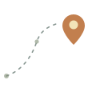
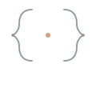
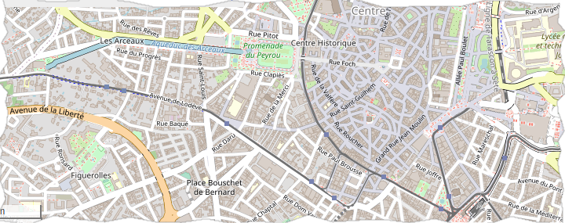

Géomaticienne & Développeuse
Dinah Fanilontsoa
Je transforme des territoires en données, et des données en interfaces. De Madagascar à la Corée du Sud, mon parcours cartographie autant de lieux que de lignes de code.